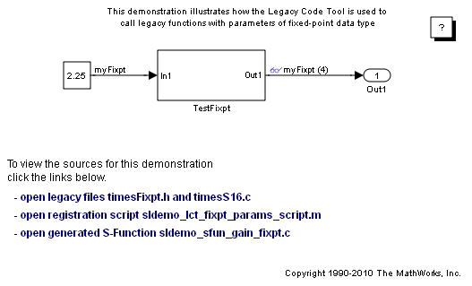
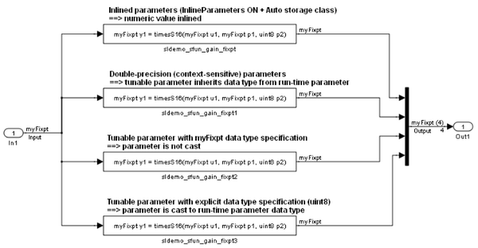

Fixed Point Parameters in Legacy Functions
This demo shows you how to use the Legacy Code Tool to integrate legacy C functions that pass their inputs and outputs using parameters of fixed point data type.
The Legacy Code Tool allows you to:
- Provide the legacy function specification,
- Generate a C-MEX S-function that is used during simulation to call the legacy code, and
- Compile and build the generated S-function for simulation.
Contents
Providing the Legacy Function Specification
All functions provided with the Legacy Code Tool take a specific data structure or array of structures as the argument. The data structure is initialized by calling the function legacy_code() using 'initialize' as the first input. After initializing the structure, you have to assign its properties to values corresponding to the legacy code being integrated. For detailed help on the properties, call legacy_code('help'). The prototype of the legacy functions being called in this demo is:
myFixpt timesS16(const myFixpt in1, const myFixpt in2, const uint8_T fracLength)
where myFixpt is logically a fixed point data type which is physically a typedef to a 16-bit integer:
myFixpt = Simulink.NumericType; myFixpt.DataTypeMode = 'Fixed-point: binary point scaling'; myFixpt.Signed = true; myFixpt.WordLength = 16; myFixpt.FractionLength = 10; myFixpt.IsAlias = true; myFixpt.HeaderFile = 'timesFixpt.h';
The legacy source code is found in the files timesFixpt.h, and timesS16.c.
% sldemo_sfun_gain_fixpt def = legacy_code('initialize'); def.SFunctionName = 'sldemo_sfun_gain_fixpt'; def.OutputFcnSpec = 'myFixpt y1 = timesS16(myFixpt u1, myFixpt p1, uint8 p2)'; def.HeaderFiles = {'timesFixpt.h'}; def.SourceFiles = {'timesS16.c'}; def.IncPaths = {'sldemo_lct_src'}; def.SrcPaths = {'sldemo_lct_src'};
Generating and compiling an S-Function for Use During Simulation
The function legacy_code() is called again with the first input set to 'generate_for_sim' in order to automatically generate and compile the C-MEX S-function according to the description provided by the input argument 'def'. This S-function is used to call the legacy functions in simulation. The source code for the S-function is found in the file sldemo_sfun_gain_fixpt.c.
legacy_code('generate_for_sim', def);
### Start Compiling sldemo_sfun_gain_fixpt
mex('B:\matlab\toolbox\simulink\simdemos\simfeatures\sldemo_sfun_gain_fixpt.c', 'B:\matlab\toolbox\simulink\simdemos\simfeatures\sldemo_lct_src\timesS16.c', '-IB:\matlab\toolbox\simulink\simdemos\simfeatures\sldemo_lct_src', '-IB:\matlab\toolbox\simulink\simdemos\simfeatures', '-IB:\matlab\toolbox\simulink\simdemos\simfeatures\html')
### Finish Compiling sldemo_sfun_gain_fixpt
### Exit
Generating an rtwmakecfg.m File for Code Generation
After the TLC block file is created, the function legacy_code() can be called again with the first input set to 'rtwmakecfg_generate' in order to generate an rtwmakecfg.m file to support code generation through Real Time Workshop. The file is needed only if the required source and header files for the S-functions are not in the same directory as the S-functions, and you want to add these dependencies in the makefile produced during code generation.
Note: This step is only needed if you simulate the model in accelerated mode.
legacy_code('rtwmakecfg_generate', def);
Generating a masked S-Function block for calling the generated S-Function
After the C-MEX S-function source is compiled, the function legacy_code() can be called again with the first input set to 'slblock_generate' in order to generate a masked S-function block that is configured to call that S-function. The block is placed in a new model and can be copied to an existing model.
% legacy_code('slblock_generate', def);
Demoing the Generated Integration with Legacy Code
The model sldemo_lct_fixpt_params shows integration with the legacy code. The subsystem TestFixpt serves as a harness for the call to the legacy C function via the generated S-function.
open_system('sldemo_lct_fixpt_params') open_system('sldemo_lct_fixpt_params/TestFixpt') sim('sldemo_lct_fixpt_params') 